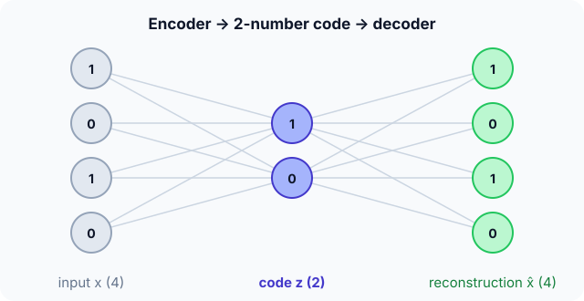

Prerequisites
- Dense layers.
- MSE loss.
- PCA: a linear autoencoder learns the same subspace.
The analogy
Everyday analogy
Think of summarising a long email in two bullet points (the code), then asking a colleague to rewrite the full email from your bullets alone.
If the rewritten email is close to the original, your bullets captured what matters. An autoencoder learns both the summariser (encoder) and the rewriter (decoder) by comparing the result with the original.
How it works
This example: linear encoder $z = W_e x$ with $W_e = \begin{bmatrix} 0.5 & 0 & 0.5 & 0 \\ 0 & 0.5 & 0 & 0.5 \end{bmatrix}$; decoder $\hat x = W_d z$ with $W_d = \begin{bmatrix} 1 & 0 \\ 0 & 1 \\ 1 & 0 \\ 0 & 1 \end{bmatrix}$; loss = MSE between $x$ and $\hat x$.
Start with one input by hand
Input $x = [1, 0, 1, 0]$. Predict, then open "Check".
Example: predict before you read
Step 1. Encode: $z_1 = 0.5 x_1 + 0.5 x_3$, $z_2 = 0.5 x_2 + 0.5 x_4$.
Check
$z = [1, 0]$: two numbers instead of four.
Step 2. Cover the next line and guess: decode $\hat x = [z_1, z_2, z_1, z_2]$.
Check
$[1, 0, 1, 0]$.
Step 3. Reconstruction error (MSE).
Check
0: this input fits the pattern the autoencoder encodes (positions 1 and 3 equal, 2 and 4 equal).

Quick recall: Before reading further, cover the text above and say out loud: why must the code be smaller than the input?
Check your answer
Otherwise the network could just copy the input through unchanged; the bottleneck forces it to keep only the most important structure.
Finish the picture: an unusual input
Feed $x = [1, 1, 0, 0]$ to the same autoencoder.
- Code and reconstruction. Predict both.
Check
$z = [0.5, 0.5]$; $\hat x = [0.5, 0.5, 0.5, 0.5]$.
- Error, and what it tells you. Predict the MSE and its use.
Check
$(0.25 \cdot 4)/4 = 0.25$. A high error flags an input unlike the training data: the idea behind autoencoder anomaly detection.
Quick recall: Without scrolling up, say out loud: what reconstruction error did $[1, 1, 0, 0]$ get, and why?
Check your answer
0.25: it doesn't match the pattern the code keeps, so it comes back as the blur $[0.5, 0.5, 0.5, 0.5]$.
Full worked calculation
The page's autoencoder, encoder $W_e = \begin{bmatrix} 0.5 & 0 & 0.5 & 0 \\ 0 & 0.5 & 0 & 0.5 \end{bmatrix}$ and decoder $W_d$ that copies each code value back to two positions, used as an anomaly detector on four inputs with a threshold of 0.1.
| Input $x$ | Code $z = W_e x$ | Reconstruction $\hat x = W_d z$ | MSE | Verdict (> 0.1) |
|---|---|---|---|---|
| [1, 0, 1, 0] | [1, 0] | [1, 0, 1, 0] | 0 | normal |
| [0, 1, 0, 1] | [0, 1] | [0, 1, 0, 1] | 0 | normal |
| [1, 0, 0, 0] | [0.5, 0] | [0.5, 0, 0.5, 0] | 0.125 | anomaly |
| [1, 1, 0, 0] | [0.5, 0.5] | [0.5, 0.5, 0.5, 0.5] | 0.25 | anomaly |
-
1Encode
$$z_1 = 0.5 x_1 + 0.5 x_3, \qquad z_2 = 0.5 x_2 + 0.5 x_4 \;\Rightarrow\; [1, 0, 1, 0] \mapsto [1, 0]$$The encoder squeezes 4 numbers into 2. Each code value is the average of two positions, so the code can only describe inputs where positions 1 and 3 (and 2 and 4) agree.
-
2Decode
$$\hat x = [z_1,\; z_2,\; z_1,\; z_2] = [1, 0, 1, 0]$$The decoder writes each code value back into the two positions it came from. For an input that follows the pattern, nothing is lost.
-
3Reconstruction error
$$\text{MSE} = \frac{1}{4}\sum_i (x_i - \hat x_i)^2 = 0$$The training loss of an autoencoder is exactly this error. A low value means "this input looks like the data I was trained on".
-
4An input that breaks the pattern
$$[1, 0, 0, 0] \mapsto z = [0.5, 0] \mapsto \hat x = [0.5, 0, 0.5, 0], \qquad \text{MSE} = \frac{0.25 + 0 + 0.25 + 0}{4} = 0.125$$The bottleneck has no way to say "position 1 but not position 3", so it averages them. The error reveals that this input is unusual.
-
5The most unusual input
$$[1, 1, 0, 0] \mapsto [0.5, 0.5] \mapsto [0.5, 0.5, 0.5, 0.5], \qquad \text{MSE} = \frac{4 \cdot 0.25}{4} = 0.25$$Every position is off by 0.5. This input contradicts the pattern twice, so its error is twice as large.
-
6Decide with a threshold
$$\text{MSE} > 0.1 \;\Rightarrow\; \text{anomaly}$$In practice the threshold is chosen from the errors on normal validation data, for example their 99th percentile. Here the two pattern-following inputs pass and the two others are flagged.
What the numbers tell us
An autoencoder compresses (4 → 2 numbers) and rebuilds. Inputs like the training data come back almost perfectly; unusual inputs come back blurred.
The reconstruction error therefore works as an anomaly score, with no labelled anomalies needed for training.
The rule in plain words
Train an encoder $z = f(x)$ to a small code and a decoder $\hat x = g(z)$ back to the input, minimising the reconstruction error between $x$ and $\hat x$.
Afterwards, use $z$ as a compact representation, or the reconstruction error as an anomaly score.
Quick recall: Before you read the code, describe the encode–decode–error steps, in your own words. Then check below.
Check your answer
Multiply the input by the encoder weights to get the code, multiply the code by the decoder weights to rebuild the input, then average the squared differences with the original.
The code
Read this code after you have encoded and decoded by hand. It will make more sense.
double reconstruct_mse(double x[], double We[][4], double Wd[][2], double xh[]) { /* 4 → 2 → 4 */
double z[2];
for (int k = 0; k < 2; k++) { /* encoder */
z[k] = 0;
for (int j = 0; j < 4; j++) z[k] += We[k][j] * x[j];
}
double err = 0;
for (int j = 0; j < 4; j++) { /* decoder + squared error */
xh[j] = Wd[j][0] * z[0] + Wd[j][1] * z[1];
err += (x[j] - xh[j]) * (x[j] - xh[j]) / 4;
}
return err;
}Definition
What you just did, in one line: an autoencoder is a network trained to reproduce its input through a smaller bottleneck code, made of an encoder $x \to z$ and a decoder $z \to \hat x$, using the reconstruction error as the loss.
flowchart LR
X["input x (4)"] --> ENC["encoder"]
ENC --> Z["code z (2)"]
Z --> DEC["decoder"]
DEC --> XH["reconstruction x̂ (4)"]
XH --> L["loss = ||x - x̂||²"]
X --> L
Putting numbers on it
Quick recall: Before looking at the formula, predict: what is the training target of an autoencoder?
Check your answer
The input itself: it learns to output its own input, through the bottleneck.
Training minimises the reconstruction error over the data:
$$\min_{f,\, g} \; \frac1n \sum_{i} \lVert x_i - g(f(x_i)) \rVert^2, \qquad [1, 1, 0, 0] \to \hat x = [0.5, 0.5, 0.5, 0.5],\; \text{MSE} = 0.25$$| Variant | Twist | Use |
|---|---|---|
| Undercomplete (ours) | Code smaller than input | Compression, features |
| Denoising | Input corrupted, target clean | Removing noise |
| Sparse | Penalty keeps most code units at 0 | Interpretable features |
| Variational (VAE) | Code is a probability distribution | Generating new data |
Warning
A plain autoencoder's code space has gaps: decoding a random point between codes often gives garbage. To generate new samples, use a variational autoencoder.
Exam tip
Say what is supervised and what isn't: no labels are needed, because the target is the input itself. Then name one use (compression, denoising, anomaly detection) and its mechanism.
Common mistakes
- Using a code as large as the input without other constraints, which lets the network learn the identity.
- Expecting a plain autoencoder to generate realistic new samples from random codes.
- Judging anomalies with a threshold set on test data instead of on normal training data.
Try it yourself
Exercise 1 (warm-up)
Encode and decode $x = [0, 1, 0, 1]$ with the same weights. What is the error?
Hint
It matches the pattern.
Answer
$z = [0, 1]$, $\hat x = [0, 1, 0, 1]$, error 0.
Exercise 2 (a bit harder)
Encode and decode $x = [1, 0, 0, 0]$. Compute the reconstruction and MSE, and explain the result. Write your answer down before you open it.
Show answer
$z = [0.5, 0]$, $\hat x = [0.5, 0, 0.5, 0]$; errors 0.25, 0, 0.25, 0, MSE $= 0.125$. The code can only say "positions 1 and 3 together", so a lone 1 is smeared across both.
Did you know?
Did you know?
A linear autoencoder trained with MSE learns the same subspace as PCA; non-linear layers let autoencoders capture curved structure that PCA misses.
Image generators such as Stable Diffusion work in the compressed code space of an autoencoder, which makes generation far cheaper than working on raw pixels.
Key points to remember
If you remember one thing from each line, remember the because.
- The bottleneck forces compression because the code has fewer numbers than the input.
- No labels are needed because the training target is the input itself.
- Reconstruction error flags anomalies because inputs unlike the training data don't fit the learned code.
- Linear autoencoders match PCA because both find the best low-dimensional linear subspace under squared error.
- Plain autoencoders don't generate well because their code space isn't organised for random sampling.
Self-check questions
Answer these in order, out loud. They follow the page, so your answers become the script of your video.
- How is an autoencoder like summarising an email in two bullet points?
Sample answer
If a colleague can rewrite the email well from just the bullets, the bullets captured what matters; the code plays the bullets' role.
- Encode and decode $[1, 0, 1, 0]$ with the given weights.
Sample answer
Code $[1, 0]$, reconstruction $[1, 0, 1, 0]$, error 0.
- Why does the code divide each squared difference by 4?
A good answer mentions MSE.
Sample answer
It averages the squared errors over the 4 positions, giving the mean squared error.
- So what is an autoencoder, in one sentence?
Sample answer
A network trained to reproduce its input through a smaller code, with an encoder and a decoder.
- Why does $[1, 1, 0, 0]$ reconstruct badly?
A good answer says what the code can express.
Sample answer
The code only stores "average of positions 1 and 3" and "average of 2 and 4", so this input becomes [0.5, 0.5] and decodes to a uniform blur.
- What loss is used, and what variants exist?
Sample answer
Reconstruction error, usually MSE; variants include denoising, sparse and variational autoencoders.
- How can an autoencoder detect anomalies?
Sample answer
Train it on normal data; inputs with unusually high reconstruction error are flagged as anomalies.
- If you had to teach this to a friend in 2 minutes, what would you leave out, and why?
Sample answer
I'd leave out the variants and the PCA link. I'd keep the email-summary analogy, the 4 → 2 → 4 example with a good and a bad input, and "no labels, bottleneck, reconstruction error".
External resources
- Deep Learning book, chapter 14: Autoencoders: Goodfellow, Bengio and Courville, free online.
- Wikipedia: Autoencoder: variants and applications.
- PyTorch tutorial: Build a model: the building blocks for an encoder and decoder.
Videos
- YouTube search: autoencoders explained: pick a short visual explanation.